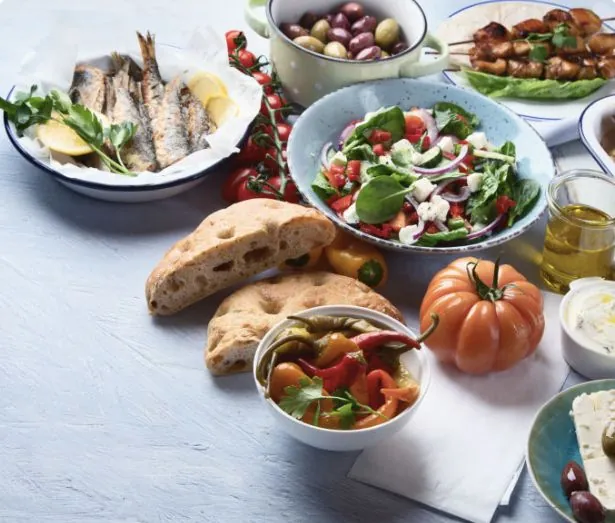

Houmous maison
Crème de pois chiches, citron, huile d’olive et pain grillé.
L’esprit de la Méditerranée
Des produits de saison, des assiettes généreuses et le plaisir de se retrouver autour d’une belle table.
Du soleil, du goût et du partage.

L’esprit Maison Olive
De bons produits, des recettes simples et ces repas qui donnent envie de rester un peu plus longtemps.
Les produits
Légumes colorés, herbes aromatiques et ingrédients frais pour une cuisine pleine de caractère.
La cuisine
Des recettes du Sud où chaque ingrédient trouve sa place, avec équilibre et gourmandise.
L’accueil
Un lieu chaleureux pour un déjeuner entre amis, un dîner à deux ou un repas en famille.
L’art de recevoir
Des matières naturelles, des couleurs douces et le charme des repas qui s’étirent.

Bois clair, lin et lumière du jour : une simplicité qui met à l’aise.

Olive, terre cuite, crème et sable.

Des plats au centre de la table, pour goûter à tout.
Informations pratiques
L’essentiel en un coup d’œil, avant de passer à table. Les informations sont des exemples.
Au cœur du quartier, à deux pas du marché. Terrasse ombragée aux beaux jours.
Adresse d’exempleDu mardi au samedi. 12 h – 14 h 30 · 19 h – 22 h 30
Horaires d’exemplePar téléphone ou en ligne, jusqu’à la veille au soir.
Réservation fictiveSalle de plain-pied, accueil adapté sur simple demande.
ExempleQuestions fréquentes
Les réponses aux questions que l’on se pose avant de réserver.
Oui : elle suit le marché et se renouvelle avec les produits du moment.
Par téléphone ou en ligne, jusqu’à la veille au soir. Pour un repas en terrasse, pensez à le préciser.
L’équipe détaille chaque plat sur demande. Signalez une allergie dès la réservation : la cuisine s’adapte quand c’est possible.
Avec plaisir. Anniversaire, repas d’équipe ou fête de famille : un menu à partager peut être préparé pour l’occasion.
Un concept créé par Studio Web
Cette démonstration montre comment un site soigné met en valeur un restaurant : son ambiance, sa carte et ses informations pratiques, lisibles sur téléphone.
Maison Olive est une marque fictive : la carte, les horaires et les réservations sont des exemples.